Set the day light of your Chihiros Universal WRGB lights phase by phase, on the PC and on your iPhone. The program is stored in each light, so the lights keep running when the laptop goes to work.
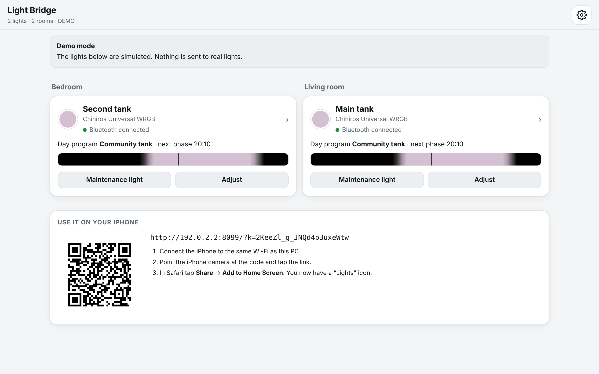
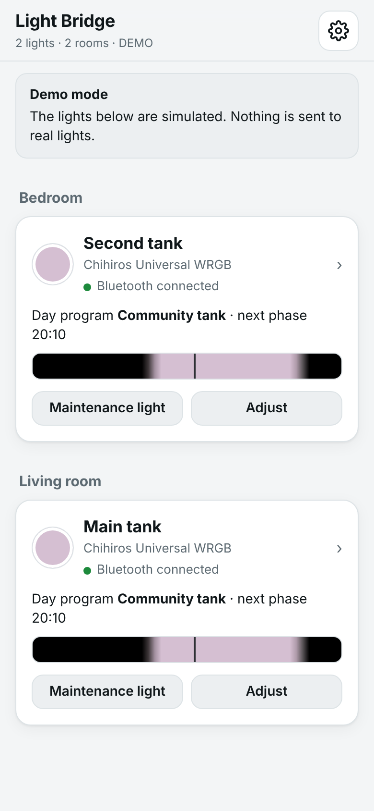
Anyone who looks after the tanks. You need no technical knowledge. Steps marked one time are done once and never again.
The pictures show the demo mode with simulated lights. Your screen looks the same, with your own lights and rooms.
Light Bridge is a small program for your laptop. It gives you one clear page for both Chihiros lights and stores your day programs in the lights themselves.
| Before (My Chihiros app) | With Light Bridge |
|---|---|
| The colour steps over the day can only be set all at once. | → Every phase of the day is changed on its own. The tank shows the result right away. |
| The app often loses the connection. | → The lights run their program on their own. The laptop is only needed for changes. |
| Two lights in two rooms, set up one by one. | → One page for both, sorted by room. Each light keeps its own program. |
| After a power cut, the light can have the wrong time. | → Light Bridge sets the clock of each light whenever the laptop is near it. |
| Manual colours stay on until someone switches back. | → Manual light ends on its own after the time you choose. |
| Account, cloud, app updates. | → No account, no cloud. Everything stays in your home. |
The menu follows the Juwel HeliaLux, which many people find clear and simple:
A day is a list of phases. Each phase says: “at this time, reach these colours”. In between, the light fades.
While you change a phase, the tank shows it immediately. A slider lets you look at any time of day.
Ready-made day programs, for example with a midday break or a warm sunset. Pick one and adjust it.
The day program lives in the light. The laptop is like a remote control: you only need it nearby to change something.
The lights simply keep running their stored programs. Only a manual light that is on at that moment stays on until the laptop is back. Light Bridge shows this clearly (see page 7). Tip: tap Back to day program before you leave.
| A Windows laptop | With Bluetooth. Almost every laptop has it. It is used as a normal laptop; it may go to work, sleep or be switched off. |
| Your two Chihiros lights | Switched on, as usual. |
| The Light Bridge folder | The file light-bridge.zip you received with this guide. |
| About 20 minutes | Only once. |
Double-click Start-With-Windows once. Light Bridge then starts by itself, minimised, when you sign in, and is ready whenever the laptop is at home. To undo: Stop-Starting-With-Windows.
Light Bridge runs in a black window. You can minimise it. If you close it, Light Bridge stops; the lights keep running their stored programs.
Sleep is fine. You do not need to keep the laptop awake: the lights do not need it.
Light Bridge finds Chihiros lights nearby by itself. To be safe, it changes nothing in a light until you confirm that it is yours.
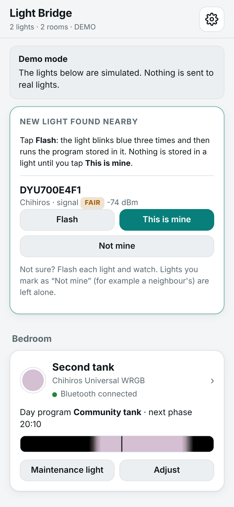
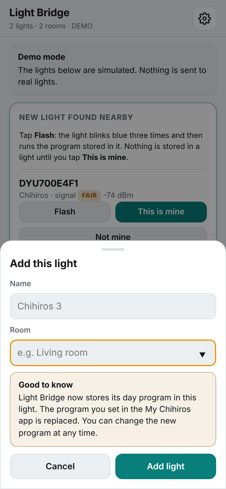
When you add a light, Light Bridge stores its own day program in it (it starts with the template “Community tank”). The program you had set in the My Chihiros app is replaced. You can change the new one at any time.
Tap Not mine, for example for a neighbour's Chihiros. Light Bridge then leaves that light alone and does not show it again.
A Chihiros talks to only one device at a time. Close the My Chihiros app on every phone in the household, otherwise it may block Light Bridge.
No App Store download is needed. The iPhone opens the page that the laptop offers in your home Wi-Fi.
The code contains a secret key. Only devices that scanned it can use Light Bridge. Other people in the same network, for example when the laptop is at work, cannot. If a phone shows “Connect this device once”, simply scan the code again.
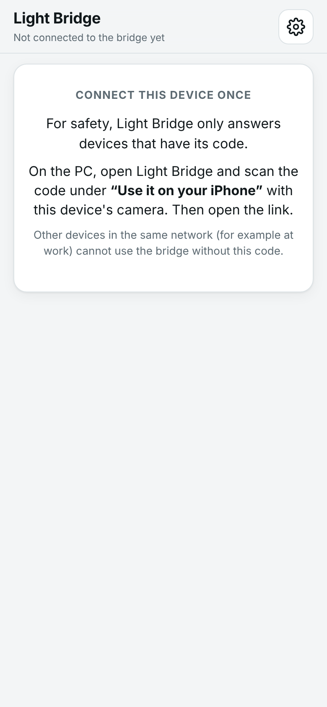
The first page shows all lights, sorted by room. One look tells you what each light is doing.
| Bluetooth connected | The laptop is near. Changes go through right away. |
| Out of range · runs its own program | All good. The laptop is away; the light runs its program. |
| Out of range · still in manual light | The manual light stays until the laptop is near this light again. |
| change waiting | A change is stored as soon as the laptop is near the light. |
Tap a light. The tab Now shows what the light is doing and lets you change it at once.
Move a slider. The light changes immediately. Each slider is one colour: W white, R red, G green, B blue. 0 is off, 100 is full.
Below the sliders, choose how long: 30 minutes, 1 hour, 3 hours or 12 hours. After that, the light goes back to its day program on its own.
| Maintenance light | All colours at full power for 60 minutes. |
| Lights off (1 h) | Dark for one hour, then back to the day program. |
| Back to day program | Ends manual or maintenance light at once. |
The light can end its day program on its own, but not a manual light. Only the laptop can switch it back. If you take the laptop away before the time is up, the manual light stays on until the laptop is near the light again.
Before you leave: tap Back to day program.
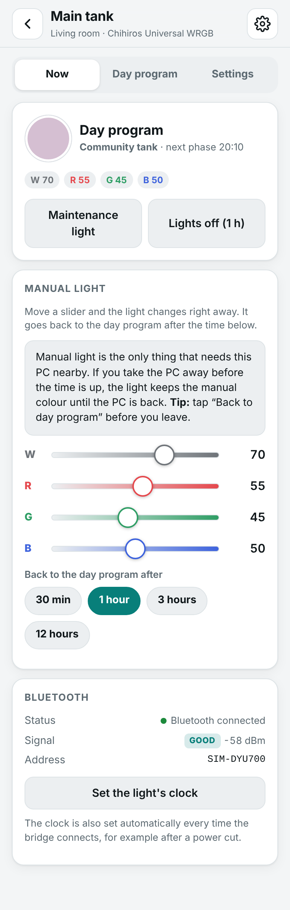
A day program is a list of phases. Each phase says: “at this time, the light should have reached these colours”. Between two phases, the light fades smoothly.
The Chihiros can store a simple program by itself: switch on, fade up, full light, fade down, off, with one colour mix. Light Bridge makes this simple version from your day program and stores it in the light. Moonlight and a midday break are left out. The card “Stored in the light” shows exactly what the light runs.
If the light can also store full curves with all phases, the light runs your whole program. A short test shows whether it can (page 11).
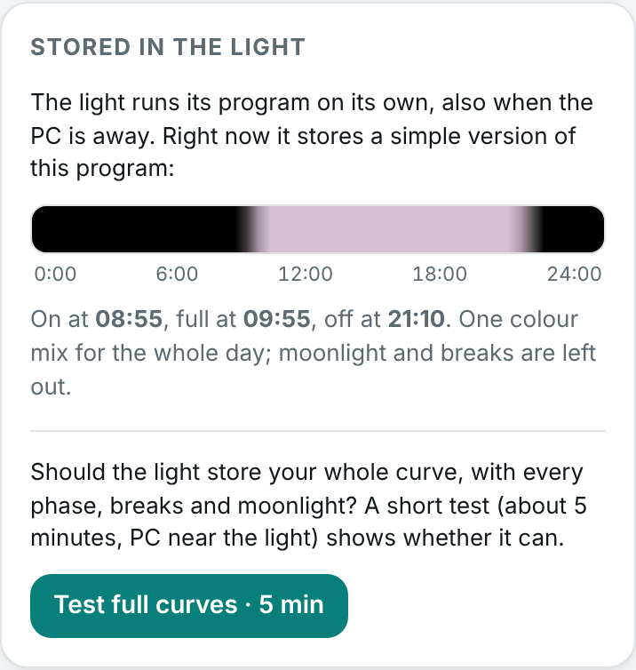
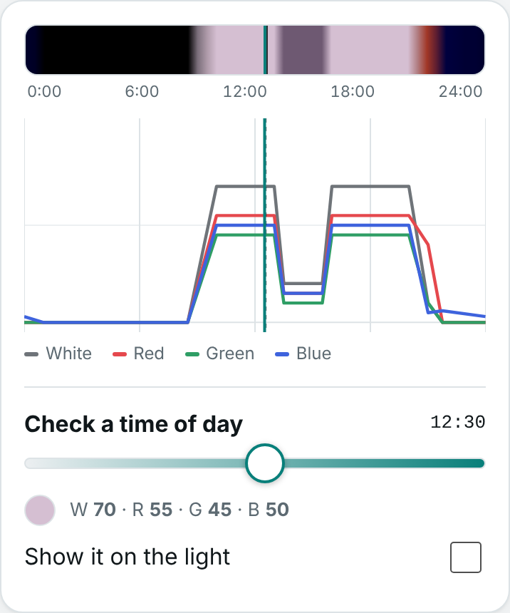
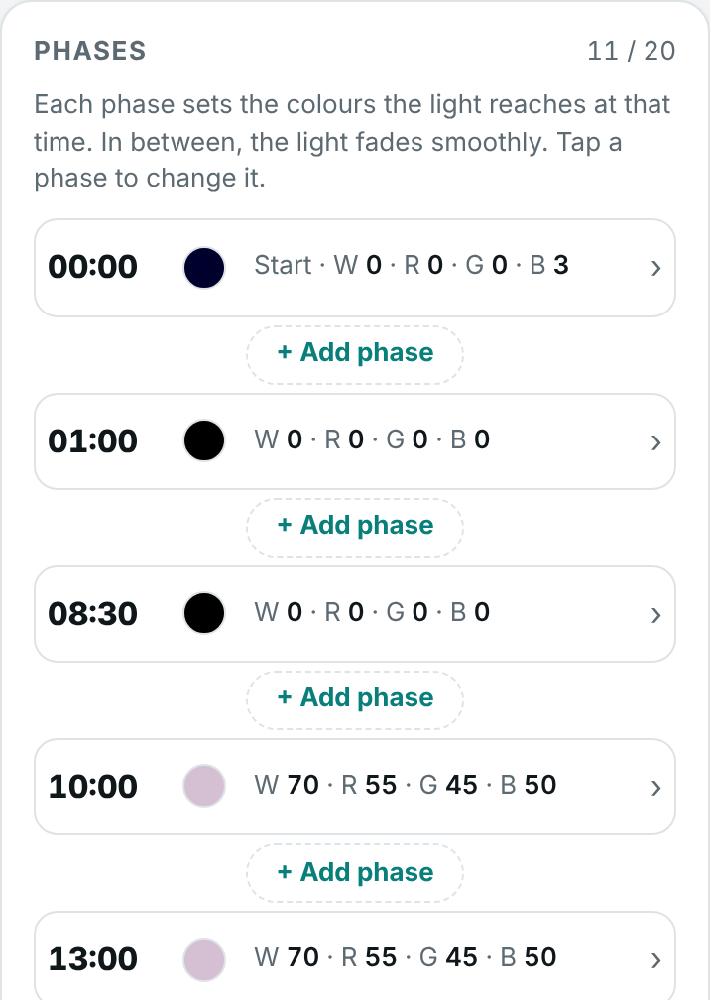
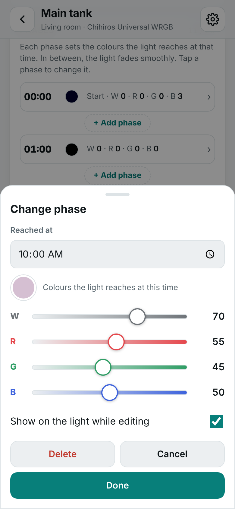
Start from a template loads a ready-made day. Copy to another light puts the same day on the other Chihiros.
Under “Used on”, tap the days this program should run, for example a later sunrise at the weekend. (With full curves, every day uses the same program.)
Can your light store your whole day program, with every phase, the midday break and moonlight? Nobody has confirmed this for the Universal WRGB yet, so Light Bridge asks the light itself. It takes about 5 minutes.
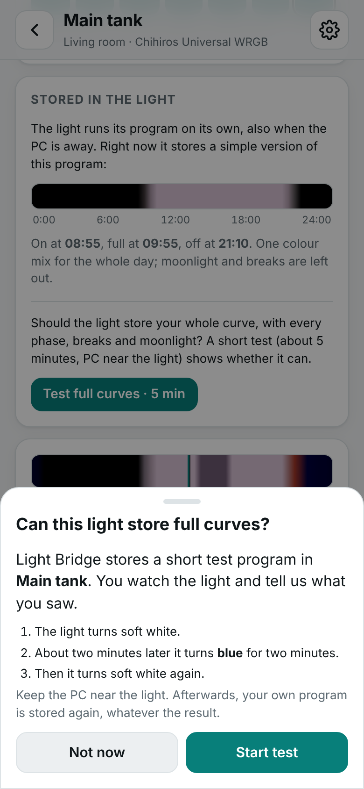
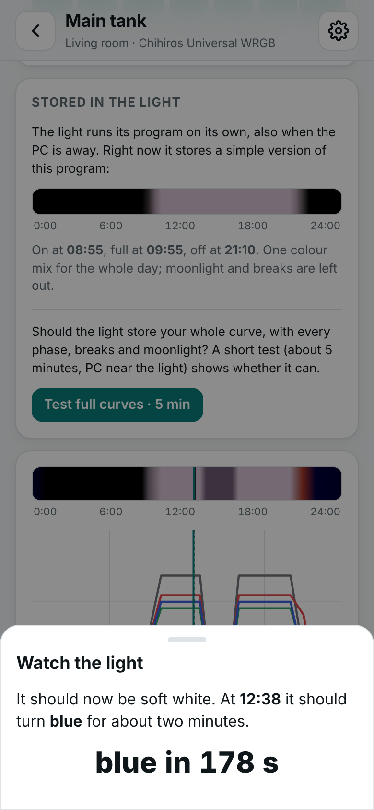
| Your answer | What happens |
|---|---|
| Yes, it turned blue | Full curves are switched on. The light runs today's program with all phases, every day. |
| No | Light Bridge tries a second way (another 5 minutes). If that does not work either, the light keeps the simple version. Nothing is lost. |
| I missed it | The test starts again. |
If both lights are the same model, you can tick Also switch my other Chihiros to full curves. Each light then runs its own program of today every day. If you are unsure, simply run the test on the second light too.
Afterwards your own program is always stored in the light again, whatever the result.
| Situation | What happens |
|---|---|
| … the laptop goes to work, sleeps or is switched off? | Both lights keep running their stored programs. When the laptop is back and Light Bridge runs, it connects again by itself. |
| … a manual light is on when the laptop leaves? | The manual light stays on until the laptop is near that light again; then the light goes back to its program. Light Bridge shows “still in manual light”. Tip: Back to day program before leaving. |
| … the laptop leaves while a change is being stored? | The app shows “program only partly stored”. As soon as the laptop is near again, the program is stored completely. |
| … I walk past a light with the laptop? | Light Bridge only starts to store a program when the connection has been steady for a few seconds. Walking past does no harm. |
| … there is a power cut? | When the power is back, the lights start with their stored program. Their clocks may be wrong until the laptop is near them; then the clock is set automatically. Tip: after a power cut, start Light Bridge at home and walk past both lights. |
| … the clocks change (summer / winter time)? | The lights' clocks are corrected the next time the laptop is near them. |
| … the Wi-Fi is down? | The lights keep running. Only the iPhone cannot reach Light Bridge. Use the laptop directly. |
| … someone opens the My Chihiros app? | It may take over the light's connection. Light Bridge shows “out of range”. Close the app; Light Bridge connects again by itself. |
| … a neighbour has a Chihiros too? | It shows up as “new light nearby”. Nothing is changed in it unless you tap “This is mine”. Tap “Not mine” to hide it. |
| … the laptop is in another network, e.g. at work? | Nobody there can use Light Bridge without the code from your laptop screen. The lights at home are not affected. |
Gear icon → Download backup saves names, rooms and all day programs in one file. Restore from file brings them back, for example on a new laptop.
The laptop has not been near the light since the change. Take it there for a minute. The tag disappears when the program is stored.
Scan the code on the laptop screen again (overview, at the bottom, or gear icon → “Use it on your iPhone”).
Check the card “Stored in the light” (tab Day program): it shows the times the light really uses. The light's clock is set whenever the laptop is near; gear icon on the light → Set the light's clock does it at once.
Light Bridge has so far only been tested with simulated lights. Please go through this list once with the real lights and note what you see. It takes about an hour.
| # | Do this | Expected | OK? |
|---|---|---|---|
| 1 | Start the demo (Start-Demo) and click through. | Everything works with simulated lights. | |
| 2 | Start Light Bridge next to light 1. Tap Flash. | Light 1 blinks blue three times. | |
| 3 | This is mine, name and room. | “Bluetooth connected”, no “storing…” after about 15 s. | |
| 4 | Compare the tank with the card “Stored in the light”. | Brightness fits the current time. | |
| 5 | Maintenance light, then Back to day program. | Full light, then back to the program. | |
| 6 | Walk away with the laptop (or switch Bluetooth off). | The light keeps its program; app: “runs its own program”. | |
| 7 | Manual light 1 h, then walk away; come back after 5 min. | Away: manual light stays, app says so. Back: program again within a minute. | |
| 8 | Manual light, then close the laptop lid. | Ideally the light goes back to its program at once (sleep hook). Note what happens. | |
| 9 | Set a phase a few minutes ahead, save, watch. | The light switches/fades at the times on the card. Note whether the fade ends or starts at that time. | |
| 10 | Full curves test (page 11). | Note: blue yes/no, first or second way. | |
| 11 | Add light 2 in the other room; repeat 4–7. | Both lights work independently. | |
| 12 | iPhone: scan the code, add to Home Screen, open from the icon. | Works in the home Wi-Fi. | |
| 13 | Next morning: is each light on its program, with the right time? | Yes, without the laptop. |
Please send the results (and the file light-bridge.log from the settings folder, shown under gear icon → About) to whoever set up Light Bridge.
Before this version was handed over, the program was checked against one question: does each light keep working in its intended mode, whatever the laptop does?
Light Bridge is a private hobby project and comes without any warranty (MIT licence). It uses unofficial interfaces of Chihiros (and optionally Juwel) products that are not published by the manufacturers; a firmware update may change them. Using it changes the light program of your aquarium: please watch the tank after changes, check on your animals and plants, and keep a backup. You use it at your own risk.
Not affiliated with, endorsed or supported by Chihiros or Juwel. Product names belong to their owners.
Light Bridge can also show a Juwel HeliaLux SmartControl (Spectrum with 4 colours, LED with 2) on the same page. This part is a beta and was not the focus of this version.
The HeliaLux stores its program itself; Light Bridge reads every change back to check it. Juwel does not publish this interface, so an update could change it. There is no automatic network search, so search again at home if its address changes.